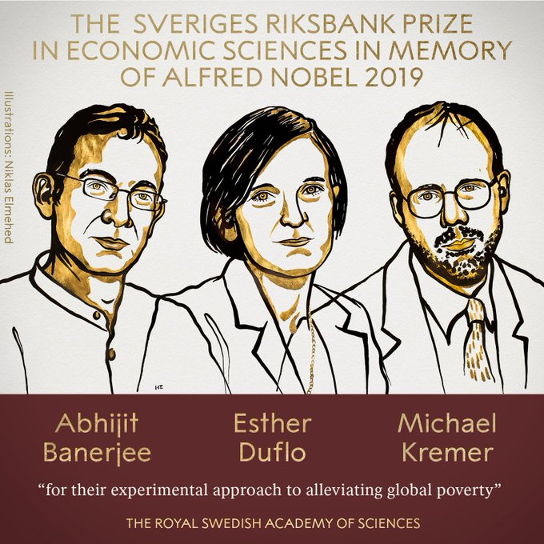
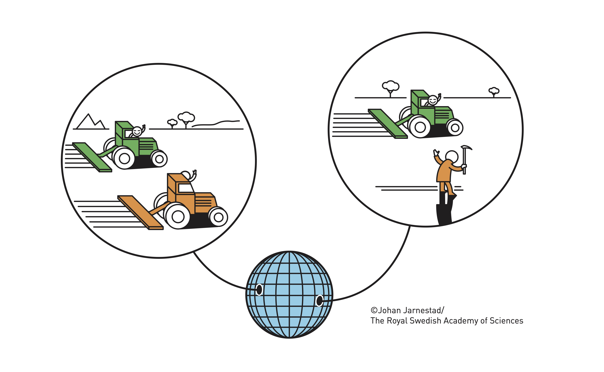

15 Understanding development and poverty alleviation
The Royal Swedish Academy of Sciences has decided to award the Sveriges Riksbank Prize in Economic Sciences in Memory of Alfred Nobel 2019 to Abhijit Banerjee, Esther Duflo and Michael Kremer.
“For their experimental approach to alleviating global poverty”

Over the last two decades, people’s living standards have noticeably improved almost everywhere in the world. Economic wellbeing (measured as GDP per capita) doubled in the poorest countries between 1995 and 2018. Child mortality has halved relative to 1995, and the proportion of children attending school has increased from 56 to 80 per cent.
Despite this progress, gigantic challenges remain. Over 700 million people still subsist on extremely low incomes. Every year, five million children still die before their fifth birthday, often from diseases that could be prevented or cured with relatively cheap and simple treatments. Half of the world’s children still leave school without basic literacy and numeracy skills.
15.0.1 A new approach to alleviating global poverty
In order to combat global poverty, we must identify the most effective forms of action. This year’s Laureates have shown how the problem of global poverty can be tackled by breaking it down into a number of smaller – but more precise – questions at individual or group levels. They then answer each of these using a specially designed field experiment. Over just twenty years, this approach has completely reshaped research in the field known as development economics. This new research is now delivering a steady flow of concrete results, helping to alleviate the problems of global poverty.
There has long been an awareness of the huge differences in average productivity between rich and poor countries. However, as Abhijit Banerjee and Esther Duflo have noted, productivity differs greatly, not only between rich and poor countries but also within poor countries. Some individuals or companies use the latest technology, while others (which produce similar goods or services) use outdated means of production. The low average productivity is thus largely due to some individuals and companies falling behind. Does this reflect a lack of credit, poorly designed policies, or that people find it difficult to make entirely rational investment decisions? The research approach designed by this year’s Laureates deals with exactly these types of questions.

15.0.2 Early field experiments in schools
The Laureates’ very first studies examined how to deal with problems relating to education. Which interventions increase educational outcomes at the lowest cost? In low-income countries, textbooks are scarce and children often go to school hungry. Would pupils’ results improve if they had access to more textbooks? Or would giving them free school meals be more effective? In the mid-1990s, Michael Kremer and his colleagues decided to move part of their research from their universities in the north-eastern US to rural western Kenya in order to answer these kinds of questions. They performed a number of field experiments in partnership with a local non-governmental organisation (NGO).

Why did the researchers choose to use field experiments? Well, if you want to examine the effect of having more textbooks on pupils’ learning outcomes, for example, simply comparing schools with different access to textbooks is not a viable approach. The schools could differ in many ways: wealthier families usually buy more books for their children, grades are probably better in schools where fewer children are really poor, and so on. One way of circumventing these difficulties is to ensure that the schools being compared have the same average characteristics. This can be achieved by letting chance decide which schools are placed in which group for comparison – an old insight that underlies the long tradition of experimentation in the natural sciences and medicine. In contrast to traditional clinical trials, the Laureates have used field experiments in which they study how individuals behave in their everyday environments.
Kremer and his colleagues took a large number of schools that needed considerable support and randomly divided them into different groups. The schools in these groups all received extra resources, but in different forms and at different times. In one study, one group was given more textbooks, while another study examined free school meals. Because chance determined which school got what, there were no average differences between the different groups at the start of the experiment. The researchers could thus credibly link later differences in learning outcomes to the various forms of support. The experiments showed that neither more textbooks nor free school meals made any difference to learning outcomes. If the textbooks had any positive effect, it only applied to the very best pupils.
Later field experiments have shown that the primary problem in many low-income countries is not a lack of resources. Instead, the biggest problem is that teaching is not sufficiently adapted to the pupils’ needs. In the first of these experiments, Banerjee, Duflo et al. studied remedial tutoring programmes for pupils in two Indian cities. Schools in Mumbai and Vadodara were given access to new teaching assistants who would support children with special needs. These schools were ingeniously and randomly placed in different groups, allowing the researchers to credibly measure the effects of teaching assistants. The experiment clearly showed that help targeting the weakest pupils was an effective measure in the short and medium term. These early studies in Kenya and India were followed by many new field experiments in other countries, focusing on important areas such as health, access to credit, and the adoption of new technology. The three Laureates were at the forefront of this research. Due to their work, field experiments have become development economists’ standard method when investigating the effects of measures to alleviate poverty.
15.0.3 Concrete results
Below, we provide a few examples of specific conclusions drawn from the type of research initiated by the Laureates, with the emphasis on their own studies.
15.0.3.1 Education:
We now have a clear perspective on the core problems in many poor country’s schools. Curricula and teaching do not correspond to pupils’ needs. There is a high level of absenteeism among teachers and educational institutions are generally weak. The above mentioned study by Banerjee, Duflo, et al. showed that targeted support for weak pupils had strong positive effects, even in the medium term. This study was the start of an interactive process, in which new research results went hand in hand with increasingly large-scale programmes to support pupils. These programmes have now reached more than 100,000 Indian schools. Other field experiments investigated the lack of clear incentives and accountability for teachers, which was reflected in a high level of absenteeism. One way of boosting the teachers’ motivation was to employ them on short-term contracts that could be extended if they had good results. Duflo, Kremer et al. compared the effects of employing teachers on these terms with lowering the pupil-teacher ratio by having fewer pupils per permanently employed teacher. They found that pupils who had teachers on short-term contracts had significantly better test results, but that having fewer pupils per permanently employed teacher had no significant effects. Overall, this new, experiment-based research on education in low-income countries shows that additional resources are, in general, of limited value. However, educational reforms that adapt teaching to pupils’ needs are of great value. Improving school governance and demanding responsibility from teachers who are not doing their job are also cost-effective measures.
15.0.3.2 Health:
One important issue is whether medicine and healthcare should be charged for and, if so, what they should cost. A field experiment by Kremer and co-author investigated how the demand for deworming pills for parasitic infections was affected by price. They found that 75 per cent of parents gave their children these pills when the medicine was free, compared to 18 per cent when they cost less than a US dollar, which is still heavily subsidised. Subsequently, many similar experiments have found the same thing: poor people are extremely price-sensitive regarding investments in preventive healthcare Low service quality is another explanation why poor families invest so little in preventive measures. One example is that staff at the health centres that are responsible for vaccinations are often absent from work. Banerjee, Duflo et al. investigated whether mobile vaccination clinics – where the care staff were always on site – could fix this problem. Vaccination rates tripled in the villages that were randomly selected to have access to these clinics, at 18 per cent compared to 6 per cent. This increased further, to 39 per cent, if families received a bag of lentils as a bonus when they vaccinated their children. Because the mobile clinic had a high level of fixed costs, the total cost per vaccination actually halved, despite the additional expense of the lentils.

15.0.3.3 Microcredit:
Development economists have also used field experiments to evaluate programmes that have already been implemented on a large scale. One example is the massive introduction of micro-loans in various countries, which has been the source of great optimism. Banerjee, Duflo et al. performed an initial study on a micro-credit programme that focused on poor households in the Indian metropolis of Hyderabad. Their field experiments showed rather small positive effects on investments in existing small businesses, but they found no effects on consumption or other development indicators, neither at 18 nor at 36 months. Similar field experiments, in countries such as Bosnia-Herzegovina, Ethiopia, Morocco, Mexico and Mongolia, have found similar results.
15.0.4 Policy influence
The Laureates’ work has had clear effects on policy, both directly and indirectly. Naturally, it is impossible to precisely measure how important their research has been in shaping policies in various countries. However, it is sometimes possible to draw a straight line from research to policy. Some of the studies we have already mentioned have indeed had a direct impact on policy. The studies of remedial tutoring eventually provided arguments for large-scale support programmes that have now reached more than five million Indian children. The deworming studies not only showed that deworming provides clear health benefits for schoolchildren, but also that parents are very price-sensitive. In accordance with these results, the WHO recommends that medicine is distributed for free to the over 800 million schoolchildren living in areas where more than 20 per cent of them have a specific type of parasitic worm infection.